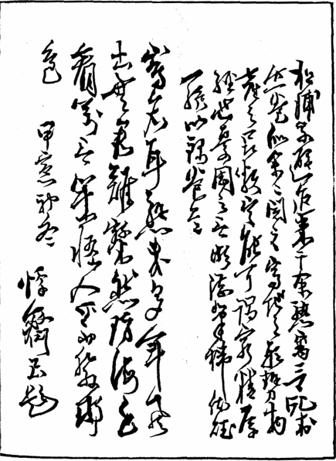
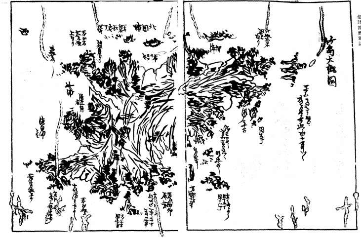
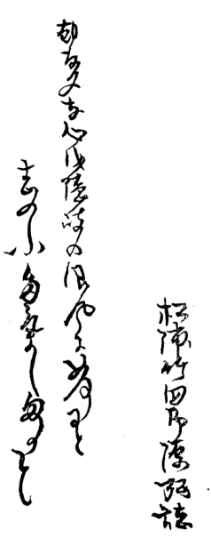
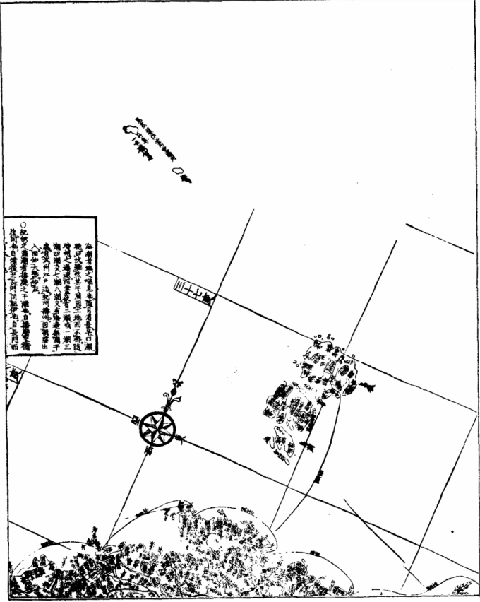

| 他計甚麽（竹島）雑誌 | |
| 松浦 武四郎 | |
| (2015) | |
他計甚麽（竹島）雜誌
松浦武四郎

凡例
一 地理の肝要なる事、不肖今贅するに及ばず、皆しる處にして、頃年其事に識者心を盡さるゝ所の堅こう にし而 龍動 の繁昌、巴里斯 の美麗人々皆しらざる者なし。山海數萬里を隔（て）其地の盛衰動亂も月を越ずしてしる。豈是太平の餘澤ならず（や）。然るに其知ると知らざると竹島なる物未だ誰も是を説く人なし。また知る人も稀なり。去る癸丑の秋より籌海の書數十篇を見るに、蝦夷、樺太、續て伊豆七島、無人島に及ぶ物有れどもまた竹島に及ぶ類 を見ず。依而 此一卷を編輯して以て竹島雜誌と名を冠しむるもの也。
一 其編澄習といへども街説里譚を不レ 用 。惣而引用の書に據て編す。其書の荒證に比すべき物は是我の杜撰 にあらざれば閲者見ゆるし給え。
一 雖レ 然 其引用る處の事、もと漁夫獵人の話しを以て記したる物のみなれば、之杜撰は取べきなしといへども之陶金家の書せし北海隨筆も、後林子平氏三國通覽を著す原書となりしも同日の談なるべし。閲者敢て蔑視し給ふことなかれ。
明治三庚午の年後三日於二 東京日比谷の馬角齋 一 誌るす
松浦武四郎弘
引用書目
一 日本風土記
一 日本輿地路程圖
一 現存六帖
一 懷中抄
一 東涯隨筆
一 草蘆雜談
一 金森建策筆記
一 宗對馬守義功家譜
一 隋書
一 大清一統圖
一 北史
一 伯耆民談
一 竹島圖説
一 太平年表
一 長兵衞竹島ばなし
他計甚麽（日本風土記）また竹島と書は、此島（東の方大坂浦に有）に大竹籔有。其竹極めて大なるは周圍二尺斗なるものあり（竹島圖説）。よつて號
るや。舳〔※［＃「身＋冉」、U+2822D、517-2］
〕羅島〔國〕（隋書）等のまた名有。
東涯隨筆に此島をして舳羅島等と云よし見えたれども、余按ずるに舳羅島と云ものは筑紫の沖に有る島をさして云り。九州邊にて瞽者どもいとだみたる聲にて※若
［＃「魚＋（冢－冖）」、U+2B660、517-4］
大臣の一代記といへるものを謠ひて市街を門づけして歩行有。其文句に舳羅島の事を多く乘せたり。然れども其前後の文句を考ふれば、舳羅島は壹岐か對島の事の樣に聞侍りけり。また東涯隨筆に周圍四十里とするに此竹島はさまではあるまじ。其大小の事は兎も角も彼大臣の比
にして、此島の事未だ如何なることか今の世にさえ明かならざるに、よもしれもせまじくまた人家もあらざるやう覺ゆ。因
に彼舳羅島の字の出ることと、其竹しまならざることとしらんが爲に爰に抄し置に、北史卷（九）十四倭傳、遺文林郎斐世清使國（倭國）度百濟行至竹島南望耽羅島〔國〕云々、等にて考ても此竹島は別なること明かなるべし。
竹島は日本を離ること遠くして漢土に近く、境内頗る廣治なる島也（伯耆民談）。隱岐の國松島の西島（松島の一小屬島也。土俗呼て次島と云。）より海上道規
凡四十里許り北の方に有（竹島圖説。此説疑ふこと多けれども他に據るもの無故にしるし置けり。）。極高三十七度五十分より八度前後に及ぶ（日本輿地路程圖。大清一統圖に據る。又考ふれば隱岐より戌亥の間四十里斗にして、石見より亥子の方八十里。長州より子丑に當りて凡九十里とも思はる。然れども是は其圖に據て考ふるなれば、此船路の説しかと定りしと思ふものなし。）
朝鮮え渡海に釜山浦の湊其間十八里。夜に到れば彼國にて明
す民家の燈たしかに見ゆるなりと渡海せし船人ども茗談
す（伯耆民談）。
然るに弘按ずるに左までは近かるまじきやに思ふ。十八（里）なれば何ぞ元祿年間まで朝鮮にて捨置こと有まじ。釜山浦は彼地の一大馬頭にして、皇邦
の浦賀、長崎の如し。其邊に如レ
此一巨島ありたるとて何で是をしらではをるまじきに

また見二
高麗一
猶雲州望二
隱州一
（日本輿地路程圖）等出たり。また古歌に
（懷中抄） いにしへもかくやときゝし竹島の
ふしをへだてゝ今ぞさやなる
（現存六帖） 竹島やよするさゞ波いくかへり
つれなき世々をかけてこふらん
弘此古歌を此處にしるし置とも、按ずるに此たけしまは近江なる湖中に有多氣島のことをよみしものか。よするさざ波の七文字にても湖邊のさま明らかなり。然れども其名の同じきまま因に抄擧し置ものなり。
其地形三角にして周圍凡十六り許。産物最多き一奇島なり（竹島圖説）。山嶽谿間あつて大竹、喬木繁茂し、諸島會〔禽〕獸多く龜鼈
、貝類素
より磯邊に充滿して産物足れる島なるとかや（伯耆民談）。また此島は竹斯
國竹島（北史倭傳）とて我國の島にきはまりたり（草盧雜談）。ことにして伯州米子
の町人大谷、村川の兩氏代々名ある町人にして、子孫は今にも町年寄を勤む。此兩人竹島渡海免許を蒙る事は、當國前大守中村伯耆守忠一
（伯耆民談）慶長十四年に卒去あつて、嗣なきが故に跡を斷て爾來
元和二年迄國主なくして御料となり、然るに依て御上〔城〕代年々武都より來番して當城に居
し、伯州を鎭護す（伯耆民談）。同年阿部四郎五郎在番あり。此時兩氏竹島渡海の事を希ふ。然るに翌（伯耆民談）
元和三年（丁巳）松平新太郎光政卿當國を管領して入部あるにより、兩人また願ふ處に光政卿軈て武都に告て許レ
之され、爾來竹島え押渡（り）海漁をなす。其後毎歳渡海不二
倦怠一
（伯耆民談）。元和四年に兩商を江府に召され免許の御朱印を賜ふ。但し直
に兩商え賜はらず、一旦烈侯（新太郎光政君）へ渡し給ふて之を拜領す（伯耆民談）。此年より兩商は將軍家の拜謁を辱ふして、時服を拜受し竹島の名産蚫
を奉貢す。後八九年を歴て兩商の内一名づゝを召して隔年の謁見に定めらる（竹島圖説）。
是によつて此兩家不レ
絶
渡海して漁事を致せしに、後七十四年を過て
元祿五年（壬申）に渡海する所に唐人群居して海獵をなす。兩氏是を製〔制〕すといへども更に不二
入聞一
のみならずして、危權〔險〕とするにより兩氏無念ながら歸帆す（伯耆民談）。
竹島圖説に元和五年春二月十有一日、例年の如く米子を出帆して隱岐の國福うらに着し、同三月二十四日福浦を出帆して同月二十六日朝五ツ時、竹島の内イカ島と云處に着す。是時剏
めて異邦の人魚獵するを見るを得たり。蓋是より先いまだ曾て見ざるなり。翌二十七日我舟を同島の濱田浦へ廻さんとする皈路において、又異船貳艘を見たり。但一艘は居船にて一艘は浮べて異邦人三十人斗是に乘れり。我舟を八九間隔て大坂浦（へ）廻る其人員に屬する者か、一人陸に遺り居たるが忽ち小舟に乘じて我の近傍に來る。因て之を向〔問〕ふに朝鮮の「カツ テレ カハ ラ」の人民と答ふ。但此人は象胥
に似て能く我が國語に通ぜり。而蚫獵の故を詰
るに彼答に曰。原
より此島の蚫を獵するの意なし。然れども此島の以北に一島有て上好の蚫最多し。是故に吾儞朝鮮國王の命を奉じて、三年毎に一回彼島に渡れり。當年も亦那邊に渡り海帆の跡難風に逢ひ、不レ
計此島に漂着すと云に 後我輩曰、此竹島は昔時より日本人蚫獵を做
れ〔し〕來れる處なれば速に出帆すべしと云ば、彼が答に、難風に遇ひ舟皆損破する故に之を補造して後去るべしと説けども、其實は急に退べきの状態にあらず。我輩の上陸して曾て築造せる小屋を檢査するに、獵船八艘を失へり。由て是を那
の象胥に質せば皆浦々へ廻はせりと答ふ。加レ
之我舟を居〔据
〕へんと強れども彼れは衆、我は寡、衆寡固より敵すべからず恐懼の情なき事能はず。故を以三月二十一〔七〕日晩七ツ時、竹島より出帆せり。但串鮑、笠、頭巾、味噌麴一丸を携へ皈れり。此は這回の渡の證と做す〔さ〕んが爲のみ。四月朔日石州濱田へ皈り雲州をへて、同月五日七ツ時に伯州米子に皈着せり。（刊本揷入。「按ずるに此元和とすることの元祿にはあらざるや。依てここに入るなり」）
翌酉（元祿六年）の年渡海するに、唐人數多渡りて家居を設けて漁獵を恣す。于レ
時兩氏計策をなして唐人兩人連歸りて米子に參着し、同年四月二十七日未の下刻灘町大谷九郎右衞門宅に入、斯て兩人島の趣、兩人の唐人召連歸帆の事を大守へ訴るに、遂に武都の沙汰に留るとかや（伯耆民談）。
竹島圖説。翌元祿六癸酉の年春二月下旬、再び米子を出帆して夏四月十七日未刻竹島に着せり。然るに昨年の如く朝鮮人等專ら漁獵をして我を妨げ、動もすれば不軌の語言を放つて和平ならず。止む事を得ず其中の長者一名と火伴
兩三輩を延ひて我船に入れ、同月十八日竹島より出帆して同二十八日米子へ皈れり。其由を國侯松平伯耆守へ訴ふ。國侯亦之を御勘定奉行松平美濃守殿へ奉上申られ、因て台命を下して那の一夥の人員を江都に召れ審に諸件を正され給ひ、時に日本人は朝鮮人との渡海は時候を異にせるにはあらずやと尋ねられしかば、右の一夥の答に、我等は毎歳春三月の比
渡島し、七月上旬皈帆の節獵舟獵具等を小屋に納め置、翌年渡島の節まで毫も差違なかりしに、去年元祿五年より小屋を發
き肆
ままに器械を奪ひ、倨然として居住するの模樣に見れば、全く此年朝鮮人創めて竹島を搜索したるに疑なしといへり。尚且之に依て魚獵難レ
爲之由屢愁訴に及べりと云に
同年大谷、村川連來る彼二人の唐人等米子より國府城下に到。時に加納郷左衞門、尾關忠兵衞兩士領主の下知
に應じて召連鳥取に入（伯耆民談。然れども此事後に見る事なし。如何なるるやらん。）。扨此後は渡海やめりと。然るによつて三年を過て
元祿九（丙子）年正月二十八日（伯耆民談）
憲廟の御時なるが、朝鮮より竹島は朝鮮の島のよしを申上ければ、竹島を朝鮮えあたえ給ふとかや（草蘆雜誌）。かくて御月番（正月二十八日也。）御老中戸田山城守殿奉書を下され候よしなり（竹島圖説）。
先年松平新太郎因伯兩州領知之節相窺之伯州米子町人村川新兵衞大谷甚吉至レ
今入二
竹島一
にて爲二
漁獵一
向後入島之義制禁可二
申付一
旨被二
仰出一
可レ
存二
其趣一
恐惶謹言
元祿九年子正月二十八日
土屋相模守
戸田山城守
阿部豐後守
大久保加賀守
松平伯耆守殿
宗對馬守義功より出たる家譜に
元祿九年因幡國與
朝鮮國與
之間竹嶋與
唱
候嶋有レ
之、此島兩國入合
之如く相成居不レ
宜
候に付、朝鮮之人此邊え參候事を被レ
禁候段從
公儀被二
仰出一
、其段朝鮮國禮曹參判江家老使者前々年より再度差渡候處、論談及二
入組一
候も今年正月二十八日義眞國え御暇被二
成下一
候節、右竹島江日本人相渡候儀無益との事に候間被二
差留一
候段、領主被二
仰渡一
候由義眞□〔江〕被二
渡海一
候ニ付、義眞歸國之上同年十月朝鮮之譯官使對話仕候刻
、右被二
仰出一
之次第傳達爰に致り論談相濟ル
尚此餘さまざま御沙汰書世にさまざま有べけれども見る事をゑせざるまましるし置かず。又此二通は不思議にも其寫しを得しまま、此處に抄擧して考證とすべきもの也。
さて其より三年を過て
十一年（元祿）丑
の秋、米子の市人村川市兵衞江戸に出て愁訴に及べり（竹島圖説）。其後は如何なりしやらん。何事も聞はべらず。（弘按ずるに、官に此村川、大谷兩人が呈せしと云へる此島の事を書し書有るよし聞り。然れば其書といへるものは此時の呈書かと思わる。余も此呈書を見まほしく四五年間探索すれども未だ得ざるこそ遺恨なり。）
然るに其後二十七年を過て
享保九（甲辰）の年、江府より因州家え台問有て、但し米子は荒尾但馬の食邑なれば、同氏え令して之を正さしめられしとかや。然るに其時彼家より此兩商の呈する處の書を謄寫して、大夫池田豐後より官え呈せしとかや。
扨其島伯州會見郡濱野曰三柳村より隱岐の後島え三十五六里あり。此遠見の考を以て朝鮮の山を見れば凡四十里と思わる。（金森建策筆記。併同人の考に此山といへるは朝鮮の欝陵山なるか。此筆記とするもの享保年間屢渡海する一老漁叟に聞しなるもののよしなり。弘再按ずるに、其漁叟と云もの石州濱田の漁夫長兵衞といへるもの哉。遊暦〔歴〕の時此近國にて好事の家にておりおり筆記するものまたは旅泊の亭主等に聞に多くは此濱田の長兵衞のことを談じたり。故に其形勢多くは此長兵衞の傳えしことを以てしるすなり。長兵衞後備前に到り小原町といへるにて死す。金森建策の筆記多くは是に據ならん。）
其地東西凡三り半。四里には不レ
滿
よし。南北凡六七り有るとかや聞り。周圍十六里といへり。其廻りに九ヶ所の岩岬有。また其餘小き岬には擧て數えがたし。また鷗の樣に岩島、暗礁多し（大サ圖に委し）。暗礁無數。奇岩怪石筆状しがたしとかや。因て船をよするに到て其場處よろしからず。只隱岐の國福浦 （隱岐都府中より西に當一ツの港なり。一ノ宮の南也。）より船を出して戌亥の方に向て遣り（凡四十リといへり。また六拾りとも云。）大坂浦と云に着る（當しまの南東隅にして一ツの岬の間に有。凡此岬と岬との間平地なる濱一里半も有べく此處に船をよする。此濱に流れ四すじ。其内一ツの流れは源少し遠きよしにて水勢急也。川上に瀑布有て年魚を産するとかや。また海岸岩石に蚫多く、海鼠滿面に有。螺、其餘東海夫人（シユリカヒ）等幷に海草擧てしるしがたし。以下其品の有ることはしるさざれども此島周圍皆如レ
此と聞り。また山皆松幷雜木にして陰森、竹多く其事は先にもしるしたればここに略しぬ。一本に此前に一ツの島有りて此濱に船をよするに向ふ風を避て甚以便なりと云り。然れども皆無谷の處なればしるすに據なし。）扨是よりして南の一大岬（此岬大岩組にして浪荒れるよし。）を廻り内に入（此處濱形二十一斗。東西に二ツの岩岬有。此處未申に向ふ。）是を
濱田浦と云（按ずるに此邊石州と對峙するが故に、濱田邊より漁者多く此處をさして乘來りしにて此名有るやと思はる。此濱砂濱にして小石まざり流れ二ツ有。其川□〔源〕は山中の瀑布より出で東方の大河二流を合て、大小三岐にわかれ其二すじは此處に來り、一すじは東濱に落るよし。此川また年魚（あゆ）を生ずること最も多しと。）。また西なる一ツの岬を廻りて（大岩組上也。）澗内
に入。何れも大岩崖にして壁立處々に崫有（此岩燕の内石燕多しと。）。また
瀑布有（岩崖に懸り高凡三十丈。） 少しの岩岬を廻り（此邊り皆絶壁なり。）西へ出、竹の浦といへるに到る（此處濱形未向。砂濱平地十五丁斗なり。其中程に一すじの流れ有。此處に船を繫ぐに［＃「繫ぐに」は底本では「繁ぐに」］
よろしと。然れども南風劇き地にして甚難所なりと船澗と云にもあらざるよし。此邊り山中尤巨竹多し。依て號るやと思わるなり。）。また西の方
一ツの大岩岬有（此處西の端なり。岬燕尾に分れて海中に突出す。何れも大岩組上なるよし。）此處を廻り少し北の面に廻りて（此邊都て岩壁也。）
大岩磯に出る（澗形をなしたり。其澗内峨々たる岩壁にして其高十丈餘有。一説に此上に貳百疊も敷るる岩※［＃「山／眉」の「目」に代えて「出」、525-3］
有といへり。海内實に無双のものならん。中に石燕多きよし。石州雲州邊にて此島を穴島といへり。また少しに）岩岬を廻りて（岩の組上なり。）砂濱に出る（此處また濱形六七十有。戌の方に向ふ。前に少しの）嶋有（此島岩斗にして凡廻り三丁斗なり。また此濱に小流れ有。然し此流西の方にては大〔第〕一とす。）。また一ツの岬（小きよし。） を廻り海中に一ツの島有（樹木なし。周凡五六丁と聞り。）また幷て一ツ有よし（此島西浦一の大島とす。凡十五六丁も周り有らん哉に聞。周り皆岩にして其邊り暗礁多し。）つゞきて大岩岬（此岩高凡百間といへり。海中に突出するよし。）廻りて
北國浦といへるに出る（濱形亥の方に向ふ。左右大岩岬。其間凡十五丁斗。砂濱なり。是に三ツの流れ有。何れも川源は嶋中の山にして瀑布有るよし。是より來ると聞り。其瀑布の邊り實に風景目ざましき勝景なる有と。）。
小島一ツまた有（北國浦の向ふなり。此瀬戸を）越てまた大岩岬（嶮嵯九十丈と聞り。） 廻りて（少し北に廻りて）
柳の浦といへるに出る（此處また左右に大岩岬有て一ツの澗となる。澗内砂濱十丁斗。平地にして川□有。此邊に芦荻多きよし也。此處の岬より少し高き地へ上れば朝鮮の山よく見ゆるよし。朝鮮人は此處をさして乘來るよし也。）。
また此處に（柳の浦の向ふなり。） 一ツの島有（此島屬島中の大なるもの也。凡廻り二十丁も有るべし。周り皆岩壁なり。また少し北へ廻り）。
一大岬を過（此岬大岩組にして海中に突出す。北のはし也。）東へ廻り少しの濱有（平地にして谷川一つ。凡此間六七丁といへり。荻芦多し。左右大岩岬也。）また前に
三本柱といへる島有（此岩の高百五十間にして周り四十間斗と云。其二ツは上に松の樹生たり。一説此しま皆離れたりとも云。また根は一つにして三ツに分れたりとも云り。此邊り之土人此話をする時は實に不思議の樣に説り。）少しの岩岬をまた廻る（此岬岩の組上なり。）一ツの岩島（此岬と島との間三十間斗といへり。島は岩にして樹木なし。越て）。砂濱に出る（小流れ有。幷て）大岩壁に
瀑布三ツ有（何れも高五十間といへり。何れも海中に落るよし。）また幷て岩岬三ツ有。此處（何れも小さきよし。）を廻りて（此邊東浦なり。）
小石濱（凡貳十丁有。）に出る。此邊り岩島暗礁多し（濱形卯辰に向ふなり。小流れ此處に五ツ有。また前に）嶋有（高五十間。周十五六間と云り。其上に松の木有て廻り暗礁多きよし也。）。また少し隔てゝ海中に島有（此周貳十丁。上に樹木多きよし。周皆岩壁にして船よせがたしと。幷て南の方）小岩岬を廻り（少しの濱に出るなり。）此邊り陸の方平山にして樹木多く、竹また多しと聞り。また一ツの岩岬を廻り（此處辰に向なり。）澗有（此澗奧行貳丁斗と云。一説二十丁といへり。此濱巳の方に向ふよし。川一つ有よし。前にまた）島有（高サ二十間周りに暗礁多し。其周り凡一町半といへり。上に松の木有。弘按ずるに、高（さ）よりは何れも周りが間少なるは如何なることやらん。其二十間、五十間は凡のつもりにしてよもさまではあるまじきものをや。然れども余は聞ままをしるし置り。）。また一ツの岩岬を廻りて彼大坂浦に來ると聞り（此間のこと皆我が日記中彼邊にて聞しをもてしるし置り。）。
惣而此島中峻嶺多く樹木繁茂、又瀑布處々有。東に當る處には一ツの奇泉有るよし。其水清く味甘美也。一日に漸一升許り涌出す（伯耆民談）。（竹島圖説。此島に甘露の瀧有。異るまた井泉ある事を沙汰す。然れども未だ其實を糺さず。故に爰に□り云々。）。實に是無比の奇島なり。
亦鮑極めて大く是を串鮑にして産物とす。凡日本普く賞翫す。所謂鮑を得ること多きが故に、岸沚の竹を燒て海中に沈置、朝に浮
レ
之に枝葉に附
鮑恰も生
木子〔茸〕の如くなるとかや（伯耆民談）。
此島に生ずる猫都
て尾短く曲なりと云。依て常にも曲尾なるをば世人號して竹島猫とは稱するなり。多くは是虎生のものと云り（伯耆民談）。
鼠 告天子
白頭翁
金翅鳥
白頰鳥
鷗 鸕鷀
綉眼
燕 鷲 角鷹 穴鳥（此鳥石燕かと思わる。朝六ツ比に岩窟を飛出して、其日の暮るる時また皈り來り其岩窟に棲むよし。人夜中に其穴を求めて之を獲ること有といへり。其色灰にして宛も燕の如し。腹もまた白し。漁人ども名（づ）けて是を穴鳥と云り。竹の浦の西なる岩窟其餘處々に〔の〕岩※［＃「山／眉」の「目」に代えて「出」、526-12］
に多しと聞り。）
海鱸（此魚肥前、平戸、五島邊の海に「マレブイ」と云ふもの此魚の類ならん。其大さ小犬の如し。面は鐵魚（ナマヅ）の如く極めて多脂なり。色白く質は蠟にして□□。是を獵せば釜中に入れ水を加えて煮る時は、油氣沸騰して上面に浮ぶ。之を取り更に水を加えて煮る時は復た始の如し。また幾度も盡る時なし。是を以て若し漁人煮せば大に油代を得るの利ある故好て獵せんとす。此魚風波無時礁上に眠り醒ざる事あり。其時其風下より廻りて括槍にて刺す也。）
人蔘（葉蘿葡〔蔔〕の如し。「ノコキレ」細く壓花の如く、色黄にして味甘辛なりと云。）結香花
（此皮を以て雁皮を漉、また藤〔籐〕紙を制〔製〕するによし。） 笑靨花
栴檀木（朱檀黒檀共に有る也。實の形ち槴子に似たり。） 黄柏 タイタラ（ハンの木の如し。又樺木の如しと（云）り。） 山茶 栂 概 大竹（周り貳尺斗のもの有るといへり。） 枸骨
（葉は機樹。茶の如し。木色赤うして葉先年々立なり。本邦の栢に似たり。） 桐 檍
蒜（葉玉簪花の如し。） 大蒜 小蒜 款冬
茗荷
土當滿
百合 牛房〔蒡〕 胡頽子
苺
虎杖
等なり。また土砂にては
辰砂 岩緑青
等に類するもの有（何れも漁人の口碑に傳ふるを筆記し置しなり。此岩緑青といへるものは羽州秋田阿仁の銅山等にて水緑青といへるもの有るが是ならんと思ふ也。） 等は其あらましにして別に人蔘、蚫、海鱸を最も多しといへり（是其大略にして漁者賤民等之産物の事に不レ
明なれば、兎に角其持皈りしもののみを記るし置しならん。）米子よりまた渡海の人此三品をいつも多く携え歸りて、其餘を持歸りしことはなかりしといへり。（此一條金森建策が筆記よりとる也。）然るに世に此地をして荒鴻〔誕ヵ〕に比する事如何にも餘りにしとやいわん。天度中正を得て三十七八度に及び（東國關八州と同じ事也。） いわんや海岸船舶をよするの地有、樹木幷巨竹を産し花卉草菜繁茂し、何ぞ不毛とはいゝがたかるべし。夫不毛といへるは樹木不レ
長
、菜草不レ
生
、沙漠礁磽の地をして云なるべし。其生ずる處の竹圍（り）貳尺に及び、實に本邦薩州大河（平）を除くの外他に比すべき地なし。樹木多く松を生じ、是また巨材を出さん。結香花、山中に多きと聞り。是の皮を剝て運用せば是また他に類少なし。いわんや人蔘に於てをや。また島中大蒜野蒜を生ずるよし。余兼而三航蝦夷日誌にしるし、佐渡日誌にも其考證をしるし置ば今此處に贅せざれども、此類を産するの地金銅、銀銅、鉛等の氣定めて多し。況や此島辰砂、岩緑青を産するに於てをや。開物者何ぞ是等のことを精（く）
せざらん。緑青は元來金、銀、銅の氣結でなり、辰砂は朱砂、錫、水銀の氣有るが故に産するなり。我が用ゆる處は漁夫どもの云傳ふると好事家の筆したるものと、其餘彼是と島中のことをしるしたるものを集めて一册とするにして、敢て航してしるしたる（に）あらざれば此餘□〔物〕産に志を齎す人をして此一島の事探さく〔索〕せば、國家の益何ぞ少なからん。
竊
に古今を達觀し、聊草茅
に赤心を危するにあらざれども、皷腹承世の創業と云は冨國強兵の二ツに出ざるは無。其國を富するの要たるや其風土を審察して、魚蝦、鳥獸、巨材、竹石の多少を明辨し耕織器什の巧を授け、舟車の便不便を委にして、其地味に據て産する處の竹木花果と雜穀菜草を試み、種まき培
ことを教え、故に是以地理の事は國家經世の基根とし、志士何ぞ是を精（く）
せずんば有べからず。又廊廟に居て國事に與る者地理を不レ
知ときは機に臨み失有。兵士を提
て征伐を事とする者地理を不レ
知ときは安危の場に失有。渡※［＃「足へん＋歩」、U+8E04、528-2］
する者地理を知らざる時は遲速の失有。（此一條三國通覽より抄ス。） 然るに古今經世之事併籌海守禦之事を説
に、皆是封内の事のみにして其邊海に距
るものなし。啻林友道のみ三國通覽を著して皇國に隣接するの各國たる朝鮮、琉球、野作
、※哈嗹島
［＃「口＋くさかんむり／（「こざとへん＋顏のへん」の「彡」に代えて「生」）」、U+21133、528-4］
、無人島
の事を記す。實に是兵道の奧旨といわん。實に是先見の明といわん。既に寛政度蝦夷島上地之等〔等之〕所置及び文化度赤夷亂妨之機に及び于役の人士此書を階梯とす。然るに近世間有志の人士籌海守禦の事を獻白す。其中時として蝦夷唐人島の事を嗹ず。都而是林友道の通覽に始て其要危をしるならん。實に是屋下
屋
を架するの比
ならん。續而去夏墨夷赤狄東西に滯船し、志士※［＃「木＋厄」、U+6799、528-7］
〔扼〕腕の餘紛々丹心を吐露するの時に及び國事を杞憂するの獻議數るに暇なし。蝦夷
、※哈嗹島
［＃「口＋くさかんむり／（「こざとへん＋顏のへん」の「彡」に代えて「生」）」、U+21133、528-8］
、無人島
、八丈島之事必を論ずるの策問之有。然るに竹島の大海中に突出し、朝鮮と皇國
の間に部落し土人未だ是に據らず。然るに此地に船をよせ山陰の諸港に出沒せば實に其害不レ
少。又彼地に上陸し島地を開墾せば其憂ひ比するにものなし。然りといへども此島元祿年間朝鮮國え御渡し有レ
之、彼地の所有ならば土俗を遣し墾開致しがたし。依て以て漂流に事よせ、漁獵の爲とし有志の士をして數輩彼地へ送り、其寄る處の異船に信を致し是に他の風説を聞、五大洲中の情態を探索せば是實に無上の奇束〔策〕といわん。また海岸に漁獵を營在せば其益少なからざらん。彼地元來我屬島にして、全く憲廟の御仁徳を以て朝鮮國に御渡しに相成し事故、今に及彼地よりして未二
開墾一
は今日之幸也。故其地を墾開し先以甘藷併馬鈴芋
を作り、甘蔗
を種に其皷〔包〕を運送到〔致〕させ、續而地味熟し候時に及び雜穀に及ぼし、樹木繁茂、竹籔巨大のものは是に隨て器什を製せば其利少からず。然りといへども誰人として此島地を審にするもの無。誰人とし而此島地を杞憂するものに未だ邂逅せず。草卉之身何ぞ是を在上の君に説
事
を得ん。只長大息の餘余山陰諸國歴遊中之日誌を閲して、其地土人の口牒〔碑〕を摘探して近年見及
聞及すの筆抄を合せ、以て一卷とし同志之士に似さんと欲す。落魄之身何ぞ其暇を得ず。然るに頃日旭堂津田君一日談海防談此島に及す。君深く此島之事を杞憂せらる。依而今是を編輯志贈。故に書中杜撰之説不レ
少。又林友道が三國通覽に比して。
嘉永七甲寅神無月上浣於二 武江※［＃「糸＋爾」、U+4324、529-4］ 〔繡〕眼兒 臺藤田氏之墨香塾一 勢州雲出之迂生
松浦竹四郎源弘誌
早々


底本：「松浦武四郎紀行集（中）」吉田武三編、冨山房
１９７５（昭和50
）年12
月20
日第1
刷発行
初出：「他計甚麽雑誌」
１８５４（安政元）年10
月
※底本のテキストは、文部省史料館蔵の手書きの原稿（１８５４（安政元）年10
月）によります。
※底本は、物を数える際や地名などに用いる「ヶ」（区点番号5-86）を、大振りにつくっています。
※底本では「さんずい＋燗のつくり」と「澗」が混在しています。525-3の「其澗内峨々たる」、525-10の「一ツの澗となる。澗内砂濱」の「澗」は「さんずい＋燗のつくり」ですが、「澗」で表記しました。
※文部省史料館蔵の手書きの原稿（１８５４（安政元）年10
月）で虫喰い部分を底本は「□」で表示しています。
※底本では正誤訂正を「〔 〕」、補遺を「（ ）」で表示しています。
※初出時の署名は「松浦竹四郎源弘」です。
入力：川山隆
校正：ばっちゃん
２０１２年12
月5
日作成
２０１４年5
月23
日修正
青空文庫作成ファイル：
このファイルは、インターネットの図書館、青空文庫（http://www.aozora.gr.jp/）で作られました。入力、校正、制作にあたったのは、ボランティアの皆さんです。